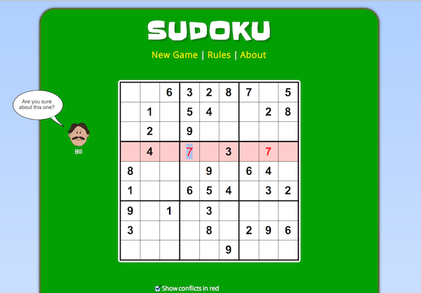

Sudoku in Javascript
Posted: Last updated:A couple of months ago I wanted to start a new side project and decided to write a Sudoku game in Javascript. One of my all-time favorite programming blog posts is Peter Norvig's Solving Every Sudoku Puzzle. It explains how he wrote a simple Sudoku Solver in Python using constraint propagation and backtracking search. So instead of trying to write everything from scratch in Javascript I decided to start by porting his Sudoku solver to Javascript, and in the process understand it better and figure out what else I would need to write a full game. The result of doing this is a fully working Sudoku game and a Sudoku library for Javascript.
The rest of this post will focus on the challenges I faced in porting the library and what the library can do. However if you're interested in how the solver actually works I highly recommend that you read Norvig's post, it's a great explanation of how the solver works, and his code is very readable.
Porting from Python to Javascript
I decided to start by doing a completely straight port of Norvig's program to Javascript. Norvig's program is very concise, coming in at just over 200 lines for a solver with tests and a simple random puzzle generator. When I started porting it I quickly realized that mine would be a bit longer, especially since I would have to implement quite a few basic functions like each, map, filter, any and other data processing functions like that, because Javascript doesn't really have a good standard library. I realize newer Javascript implementation have many of those already but I wanted my library to work on older Javascript implementations as well, especially since it was going to be used in a browser game and plenty of people still have older browsers.
In the end my port came in at 539 lines. If I don't count all the really basic utility functions I had to write then it's around 332 lines which is not too bad. You can compare the two versions here: Python version vs. Javascript version.
To make sure my version worked with more than one Javascript implementation I tried running its tests in Node.js and Windows Script Host 5.8, which is the same Javascript implementation that is in Internet Explorer 8. The performance comparison was... interesting:
Javascript - Node.js
All tests pass Solved 50 of 50 easy puzzles (avg 0.01 secs (93 Hz), max 0.03 secs). Solved 95 of 95 hard puzzles (avg 0.03 secs (39 Hz), max 0.10 secs). Solved 11 of 11 hardest puzzles (avg 0.01 secs (99 Hz), max 0.02 secs). Solved 99 of 99 random puzzles (avg 0.01 secs (104 Hz), max 0.01 secs).
Javascript - Windows Script Host 5.8
All tests pass Solved 50 of 50 easy puzzles (avg 0.08 secs (12 Hz), max 0.10 secs). Solved 95 of 95 hard puzzles (avg 0.08 secs (13 Hz), max 0.08 secs). Solved 11 of 11 hardest puzzles (avg 0.08 secs (13 Hz), max 0.08 secs). Solved 99 of 99 random puzzles (avg 0.08 secs (13 Hz), max 0.09 secs).
Python - Norvig's original script
All tests pass. Solved 50 of 50 easy puzzles (avg 0.01 secs (164 Hz), max 0.01 secs). Solved 95 of 95 hard puzzles (avg 0.02 secs (46 Hz), max 0.10 secs). Solved 11 of 11 hardest puzzles (avg 0.01 secs (128 Hz), max 0.01 secs). Solved 98 of 99 random puzzles (avg 0.01 secs (156 Hz), max 0.01 secs).
So the conclusion from this not very scientific benchmark is that Node.js and Python performed roughly equally, solving most puzzles in about 0.01 second, while Windows Script Host took 0.08 seconds on average, 8 times slower! Just goes to show how far Javascript engines have come in the last few years.
Writing a Sudoku generator
When I had ported the solver and was sure it was working properly I started thinking about how to generate new puzzles. Norvig's version had a very simple random puzzle generator used for the tests, but that didn't guarantee that the puzzles had unique solutions, which is one of the rules of Sudoku, each puzzle should have only one solution. In the end I decided on the following algorithm:
- Use the solver to generate a full puzzle
- Try removing squares. After each removed square check if the puzzle is still unique. If it's not unique put the square back in the puzzle.
- Repeat step 2 until we have the number of filled squares that we want.
Now, the algorithm above doesn't really say how we can tell if a puzzle has a unique solution or not. To do that I slightly changed Norvigs solver. When his solver tried a number in a square that had more than one possible numbers it would always just start with the first number. If a square had the possibilities 2467 left it would start with 2, then backtrack and try 4 next and so on. I changed that so there is a parameter to the solve function that controls if you always take the lowest or the highest number first. So, to check if a puzzle is unique I solve it twice, first by telling the solver to always start with the highest possible number, and then solve it again and always choose the lowest possible number. If the results of both attempts are the same puzzle then the puzzle is unique.
I also wanted to make sure that every generated puzzle could be solved using only logic. Humans are (surprisingly enough) not as good at backtracking search as computers, so whenever I have removed a square in the algorithm above I also check if the puzzle can be solved using only elimination techniques. If it can't I reject it. That also means that the puzzles generated are kind of simple, there are a number of techiques humans use in Sudoku that are not just simple elimination, but the puzzles I generate don't really require them. So, there is definitely room for improvement!
The solver is quite fast, but as you can see from the generator algorithm it might be run several times during the generation of a single puzzle. If we assume that we want 30 filled squares in a puzzle, and we run the solver three times for each removed square (twice to check uniqueness, once to check if it can be solved using only elimination) then we will run the solver (81-30)*3 = 153 times! And that's the best case, where we don't put any squares back. Of course the first few squares we remove can be checked really quickly since there are so few empty squares at that point but still! Running the generator 50 times in Node.js, generating puzzles with 30 squares filled gives the following result:
Generating 50 puzzles... 'e8a1d29c68c1c9a7a9c632e9b6a3b2a4c85e9b8a7b23e6b', '3c4c8a769c1b5fa79b6a3f5fa1a7a2d48c3a2c5e37d1', '76f9d3a7f19fd12a3a9a4b7b82c4c5c6b2c5d4a7e1', . . . 'fa19a9b6d8fc3a2a4f7c684f232a5b7a3a7a1c98e816b', 'e7a49b2a34b1a6fa8c65e72fb7c54fd2a58b9d91a58a', '1e2a6d5c44b8a3b56fe9b75b2a7fa5e3a7a2a9d6c1c', Generated 50 puzzles in 43797 milliseconds, 875.94ms per puzzle
875 milliseconds per generated puzzle isn't exactly great. I was planning on generating a new puzzle at the start of every game on http://www.sudoku-webgame.com, but adding almost a second to the load time of the page simply wasn't good enough. I could always see the delay and it annoyed me. So, what I decided to do instead was to just pre-generate a good batch of puzzles and ship them with the game, and then randomly choose one when the game starts. It kind of annoys me, because I'd prefer to generate on-the-fly, but I want things to feel fast. Maybe someday I'll generate new puzzles on the client in a web worker or something, and store them in local storage for future use.
I did try a few hacks to make it faster, for example removing 5-10 squares at once before checking if the puzzle was still unique, and then returning them one by one if it wasn't, but in the end I decided against it, because it made the code a lot more complex, and didn't give enough extra performance to be worth it.
Usage of the library
The sudoku.js library can be used to generate puzzles, solve them, get conflicts and get hints. It can also serialize and deserialize puzzles to a compact format. Rows have numbers from 1-9 and columns letters from A-I, so each square can be referenced as something like A1, B5, G2 etc. Below are short examples of each of the functions:
Loading the library
var sudoku = require('./sudoku.js');
// Use the require() function for node.js. If you just
// include the library in a web page you'll already have
// a `sudoku` object in the global scope.
Generating puzzles
var puzzle = sudoku.generate("hard")
//Other options are "easy" and "medium"
// Puzzle is a javascript object with square names as keys, and
// numbers for values, e.g. { A1:3, B4:9, C2:6 }. Empty squares
// are not included in the object.
Solving puzzles
var solvedPuzzle = sudoku.solve(puzzle);
// solvedPuzzle is a javascript object like puzzle, except with
// all squares filled
// If the puzzle given to the solve function is not solvable the
// function return false
solvedPuzzle = sudoku.solve({ A1:1, A2:1 });
// solvedPuzzle is now `false`
Serializing and deserializing puzzles
var serialized = sudoku.serialize(puzzle);
// serialized is a string representation of the puzzle, something
// like 'c46fc73d3c8c3b2c68a4a7a5fc9a62d4c9a61c8e2a57'.
// The serialization is a simple run length encoding. If you think
// of a puzzle as a list of 81 squares (A1,A2,A3...G7,G8,G9) then
// it can be encoded something like '3.6...3.6.. ... 3..5'
// where . stands for empty square. On top of that we add run length
// encoding for the dots, so a=., b=.., c=..., d=.... etc.
var deserializedPuzzle = sudoku.deserialize(serialized);
// deserializedPuzzle is now a js object again, like
// { A1 : 2, ..., G4: 7 }
Get all conflicts
var conflicts = sudoku.getConflicts({ A1: 1, A2:1});
// conflicts is a list of errors, with the following structure
// [
// {
// unit: ['A1','A2','A3','A4','A5','A6','A7','A8','A9'],
// errorFields: ['A1', 'A2' ]
// },
// {
// unit: ['A1','A2','A3','B1','B2','B3','C1','C2','C3'],
// errorFields: ['A1', 'A2']
// }
// ]
//
// Each errors shows which unit (row, column or box) it's in, and which
// fields are conflicting with each others. This info can then be used to
// show error markers or offer hints.
Get hints
// puzzle is the original puzzle, userPuzzle is another data structure
// where we keep track of what the user has entered...
var userPuzzle = {};
for (var square in puzzle) {
userPuzzle[square] = puzzle[square];
}
userPuzzle['G4'] = 5; //Imagine the user has entered this
var hint = sudoku.getHint(puzzle, userPuzzle);
// The getHint function must get both the original puzzle and the user
// puzzle, otherwise it can't figure out which squares are correct.
//The result from getHint can be four things
// 1. Error hint. Tells you that a number you've entered is wrong.
// { type : 'error', square : 'H5' }
// 2. Square hint. Tells you that a particular square now has only
// one possible digit, so if you eliminate every digit that's
// already in that squares rows, columns and box then you'll
// find the digit.
// { type : 'squarehint', square : 'F2' }
// 3. Unit hint. Tells you that in a particular unit, there is a
// particular digit that can only be in one square. E.g. the A
// column has three empty squares, but one of the three numbers
// that is left can only fit in one of the three.
// {
// type : 'unithint',
// unit : [ 'A1','A2','A3','A4','A5','A6','A7','A8','A9' ],
// unitType : 'column',
// digit : 5
// }
// 4. The hint function can't find any hints to give
// { type : 'dontknow' }
Conclusion
Writing Sudoku has taken a lot longer than I thought it would, and I'm pretty much sick of Sudoku at this point :). Porting the solver from Python and creating the generator was the most interesting part, the conflict detection and hints were not very interesting but make the library a lot more useful. The game gets around 5000 visitors a day now, which is not bad, and I'm happy with how the library came out. If you end up using it for anything please let me know, I'd be interested in hearing about it.